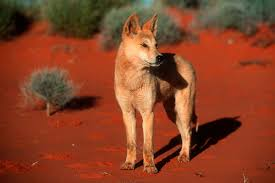

Mammals are warm-blooded vertebrates known for having hair or fur on
their bodies and for feeding their young with milk produced by special
glands called mammary glands. They have a backbone, breathe air through
lungs, and most give birth to live young (with a few exceptions like the
platypus and echidna, which lay eggs). Mammals are highly diverse and
include animals such as humans, dogs, whales, elephants, and bats. They
are found in nearly every environment on Earth, from deep oceans to high
mountains. thanks to their adaptability and complex behavior.
Dingo

The dingo is one of Australia's most unique wild animals. Though it
resembles a domestic dog, it is a separate species that has lived in the
wild for thousands of years. Adaptable and intelligent, the dingo plays
a crucial role in Australia's ecosystems but also creates tension with
farmers. This essay explores the dingo’s appearance, habitat, diet,
behavior, role in the ecosystem, human interaction, and includes some
fascinating facts about this remarkable animal.
Appearance
Dingoes have a sleek, athletic build ideal for running and hunting.
Their fur is usually golden-yellow, but can also be reddish, black, or
white. They have upright ears, almond-shaped eyes, and a bushy tail.
Adult dingoes typically weigh between 13 to 24 kilograms and stand about
50 to 60 centimeters tall at the shoulder
Habitat
Dingoes are incredibly adaptable and live in deserts, grasslands,
tropical forests, and even alpine areas. They are especially common in
central and northern Australia but are less common in the southern
regions due to farming and fencing.
Diet
Dingoes are skilled hunters and feed on a wide variety of animals. Their
diet includes rabbits, birds, reptiles, rodents, and sometimes larger
prey like kangaroos and wallabies. They also scavenge food when
necessary.
Behavior and Social Structure
Dingoes are intelligent, social animals. They may live alone, in pairs,
or in packs. In a pack, only the dominant male and female usually breed,
while the others help care for the pups. They communicate through
howling, scent marking, and body language.
Role in the Ecosystem
Dingoes play the role of apex predator in many Australian ecosystems.
They help control populations of rabbits, wallabies, and feral animals
like foxes and cats, which can threaten native species.
Interaction with Humans
While dingoes help maintain ecological balance, they are often in
conflict with farmers, especially in sheep-farming areas. To protect
livestock, farmers have used fences, traps, and poison baits. However,
conservationists argue that dingoes should be protected due to their
ecological importance.
Interesting Facts
Dingoes are believed to be the oldest breed of dog still living in the
wild, having arrived in Australia over 4,000 years ago—long before
European settlers.
Studies show that where dingoes thrive, smaller predators like foxes and
feral cats are less common—this effect is known as
"mesopredator suppression" and helps protect native wildlife.
Dingoes do not bark as much as domestic dogs. Instead, they howl—often
in a rising and falling tone—which can carry long distances through the
bush.
In some areas, dingoes have been seen cooperating with wedge-tailed
eagles by circling prey, making it easier for both the bird and the
dingo to hunt successfully.
One of the longest man-made structures in the world, the Dingo Fence,
stretches over 5,600 kilometers across Australia. It was built to keep
dingoes out of southeastern farmlands.